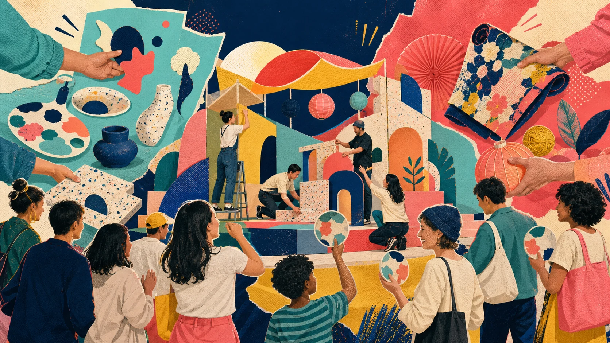

9:41•••
微信公众号 AI 排版 SKILL · OPEN SOURCE
不是给 Markdown
换一件衣服。
而是先理解文章，再决定视觉节奏。
WeChat Visual Director（公众号视觉主编）是一套开源的微信公众号 AI 排版 Skill 与本地工作台：Agent 整理主题、资料或 Markdown 并规划版式，你在成稿上直接编辑、确认配图与封面，检查手机效果，再复制、导出或创建公众号草稿。
复制提示词交给 Agent 安装；若已添加 Skill，可让支持本机执行的 Agent 继续「打开公众号工作台」。
- 12
- 完整视觉主题
- 12
- 语义组件类型
- 6
- 文章骨架类型
内容结构 → 视觉意图 → 确定性渲染
9:41•••
排版保留原文 · 主题可切换 · 图片需确认
REAL ARTICLE SHOWCASE / 03
三种内容，不用同一种模板硬套。
以下是使用本项目排版能力制作的公开示例，不含内部稿件或运营数据。配图为 AI 生成并经人工选用。在线展示为静态样例，编辑需要安装本地工作台。
CASE 01 · CAMPUS PROJECT
别让课程作业
停在文件夹里
教程步骤类内容选择「青春校园」：活页纸、课程票根与手作拼贴形成行动感，四步改造路径被识别为结构信息图。
- 主题：青春校园
- 信息关系：四步路径
- 配图：结构信息图 + 场景插画

CASE 02 · LOCAL BUSINESS
社区咖啡店
如何让客人再来
本地商业观点内容选择「温暖人文」：生活场景插画承接情绪，闭环路径解释一次活动如何留下下一次到店的理由。
- 主题：温暖人文
- 信息关系：复访闭环
- 配图：AI 场景配图 + 关系路径

CASE 03 · BRAND COLLABORATION
联名很热闹
品牌却没被记住
品牌观点内容选择「波普海报」：撞色切块、错位套印与撕纸拼贴承接联名话题的传播感，四种主题专属组件把概念、误区和行动路径组织成一篇完整文章。
- 主题：波普海报
- 信息关系：记忆三层 + 上新核对
- 配图：波普拼贴 + 共同体验场景


ARTICLE-LEVEL VISUAL DNA
图片不是散装生成，
而是共享一份美术方向。
文章决定画什么、解释什么关系；主题系统决定色板、画材、表面语言和构图气质。正文插图与封面共享同一份 Visual DNA，生成后仍由运营人工确认。
01 / STRUCTURE
结构信息图
把步骤、对比和关系变成可扫读的画面，不把整段正文塞进图片。
02 / ATMOSPHERE
场景氛围图
用环境、人物动作和光线承接情绪，让图片服务叙事而不是只做装饰。
03 / METAPHOR
视觉隐喻图
用主题专属画材表达抽象观点，同时锁定原文事实与允许出现的短标签。
- STEP 01理解原文提取文章里的事实、步骤和语义关系
- STEP 02编译视觉方向按当前主题选择色板、画材与构图气质
- STEP 03运营确认后采用检查文字与画面，再进入正文或封面
LIVE THEME LIBRARY / 12
主题不是换色，
而是一整套阅读气质。
点击主题即可即时查看同一篇示例文章的标题、留白、节奏部件和语义组件如何共同变化。数据直接导出自当前组件库。
青春校园
真实主题 · 静态样例
WHY DIFFERENT
让模型负责理解，
让程序负责稳定。
先规划，再稳定渲染
Agent 输出受控的结构化规划，本地程序用组件完成 Markdown 转微信兼容 HTML；事实与来源仍由发布者核对。
主题服务内容关系
12 套主题、12 类语义组件与 6 类文章骨架，让并列、步骤、证据和对比拥有不同表达。换主题保留正文与已有图片，不自动重新生图。
你来编辑，你来确认
600px 内容校对支持原文编辑与自动保存，405px 手机预览同步修改。图片、封面与最终稿由你确认，预览差异仍需在实际微信端核对。
ONE CONVERSATION, ONE LOCAL WORKBENCH
从一个选题，到公众号草稿箱。
- 01提出主题或资料宿主 Agent 生成规范 Markdown 与视觉意图。
- 02打开本地工作台直接修改原文，切换主题，检查手机预览。
- 03人工确认关键资产可换主题、换图、裁封面或跳过不必要的图片。
- 04交付到公众号复制全文、下载交付包或调用官方 API 创建草稿。
BEFORE YOU START
开始之前，你可能想知道
已有 Markdown 或纯文本也能排版吗？
可以。把文章交给 Agent，它先整理结构、完成语义规划，再送入工作台。首页不提供绕过规划的直接上传入口。
Codex、OpenCode 能用吗？
安装器注册 Codex、通用 Agent Skill 目录与 OpenCode。宿主需支持读取 Skill 和执行本机命令；只有提供原生生图工具时，才可直接生成正文与封面候选。
必须配置 Key 或连接公众号吗？
排版无需另配文本模型 Key，但宿主模型使用仍受自身额度与收费规则约束。生图可用宿主工具、图片 API 或人工上传；连接公众号是可选项，未连接也能复制与导出。
直接创建草稿需要公众号具有相应接口权限，在本地配置 AppID、AppSecret 和公网 IP 白名单，并通过连接检测。未连接微信时，也可以复制排版后的内容到公众号后台，粘贴后核对图片。
程序采用 Apache-2.0 开源协议；任务与配置保存在本机，但交给 Agent、图片服务或微信的内容会发送到对应服务。API Key 与 AppSecret 只填本地设置，创建草稿不自动群发。本项目与腾讯、微信官方无隶属或背书关系。
OPEN SOURCE · ALPHA
把统一安装链接交给 Agent，
让它一次装好 Skill 与工作台。
Windows x64 正式支持，macOS Apple Silicon / Intel 为 Technical Preview。无需预装 Git、Python、Node.js、pnpm 或 Homebrew。安装入口读取 main/VERSION，下载对应已发布包并校验，不沿用旧文档中的固定版本。
如果宿主只回复「Skill 已添加」，下一句说「打开公众号工作台，并告诉我怎么开始」。完整提示词要求安装、检查并打开页面；实际能否自动接续取决于宿主的执行能力。查看安装、配置与维护指南 →